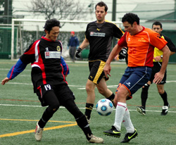
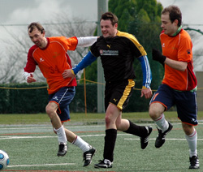
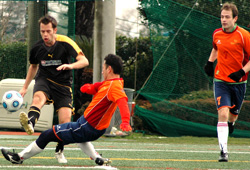
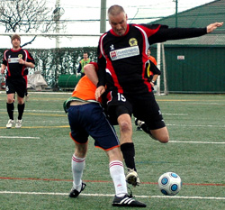

|
YC&AC, Sunday 28th February.
I love rain, early mornings and epic journeys to far away lands, so another round of TML fixtures was just the ticket. This time the venue was Yamate’s very own YC&AC. The fixture: Pumas vs. King George FC. The last meeting was decided by a late goal scored by the league’s Gubernatorial Grand Marshal and international ‘Tall Guy’ Sid Lloyd in a 2-1 win for the Pumas. KGFC were out for revenge and the all important 3 points it comes with; revenge is a dish best served cold, so the heavy rain and Arctic winds were fitting conditions.
The game kicked-off at 11:45am (thanks to everyone involved in the rearrangement of the fixture) with both teams having little preparation time due to the conditions; evidenced by Chris ‘The Reducer’ Thomas still styling his hair in the changing rooms as the ref started the game.
Pumas took the initiative; commanding the midfield in the opening exchanges. KGFC looked nervy and it showed when Alex ‘Clear the Danger’ Zupsic’s attempted clearance resulted in a superb reflex save from Marty ‘Gravity? Ha!’ Bauer. Quite how it happened, I don’t know…Early on chances were limited to set-pieces with neither team in the ascendancy.
As the half progressed the KGFC midfield began to see more of the ball and forays into the opposition half became more frequent. On one such foray (don’t remember by who, sorry) a free-kick was conceded by the Pumas, the resulting set-piece was whipped in by player/manager and agricultural heavyweight James ‘They Aren’t Boobs’ Bates onto the perfectly formed head of Ben ‘Shit Bellamy’ Steinson who glanced the ball past the keeper with consummate ease. 1-0 KGFC. Another great save from Bauer as he smothered the ball with his all encompassing mass was the main talking point for the Pumas. The half ended with KGFC in control, the rain subsiding and Chris’ hair finally styled to perfection (perhaps he was ready to start the second half?).
The second half kicked-off, as is the custom, with both teams having changed ends. KGFC, buoyed by Steinson’s first-half goal, regained control of the match with much of the work being done in centre mid by Bates and Sean ‘Worm Burner’ Caroll. Good work up front from Alex ‘I don’t know your surname’ lead to the first clear cut chance of the half, a glorious cutback followed by an astonishing miss by Steinson which will surely be regarded as something of a collectors item, although credit to the goalkeeper.
The pressure was building and the Pumas had little to say in reply. When the next goal came, the only surprise was that it came from so far out (on the wing). To the untrained eye Colin ‘Greasy Love’ Cameron’s effort may have looked like a scuffed cross/a lucky break/a fluke/a horrible miss-kick (take your pick), but to those of with an eye for the game it was a glorious piece of opportunistic long-range Koeman-esque shooting. 2-0 KGFC.
KGFC were good value for their lead with the defensive partnership of Kenichi ‘Genghis Kahn’ Takayama and the unusually sober John ‘Peas and Uni-tea’ McGowan looking sound with support from Tim ‘I don’t know your surname either’ and of course the luxuriously hair-styled Chris.
And it was from the pristinely primped Chris that the next telling contribution came. A corner headed clear only as far as the edge of the penalty area rifled on the volley into the back of the net with aplomb by the quaffered right-back. The look of delight on his face told a story that no-one wanted to read. 3-0 KGFC

A moment of hot headedness from the incredulous Steinson caused the only yellow card of the match to be shown; dissent is an ugly word, let’s just hope the normally shy and retiring Steinson has learnt his lesson…
The final highlight and the save of the match came in the dying minutes as a goal-bound shot by a Pumas attacker was miraculously palmed to safety by Bauer. After the game one excited fan said “it reminded me of that scene in ‘Free Wily’ when the killer whale clears the sea defence”. Wise words I’m sure you’ll agree.
3 goals, 2 linesmen with trench foot (Happy Birthday Iain you bottler) and 1 happy KGFC; not bad for a bleak day in a tsunami prone Yamate.
Report by Ben Steinson
|